|
|
|
Main Desert Storm Page / Gulf War Links / The Reunion Page
Please give this page of photos a minute or two to load...
This first group of 25 pictures takes place Before and During Desert Storm ...
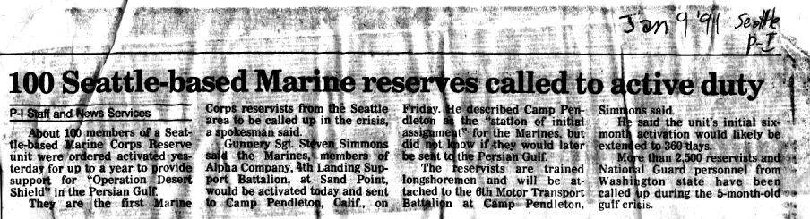
1/91 - The
Seattle Post-Intelligencer article from when we were activated. (sorry about the poor quality)

1/91 - At
Camp Shepard in the Port of Al-Jubail, in temporary housing
waiting to find out where we belong. (Dawson, Heath)

1/91 - Our
home base at Camp Shepard in the Port of Al-Jubail, for when we
weren't out on the road.
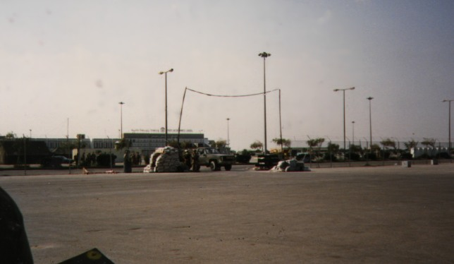
1/91 - The
entrance gate to Camp Shepard at the Port of Al-Jubail.
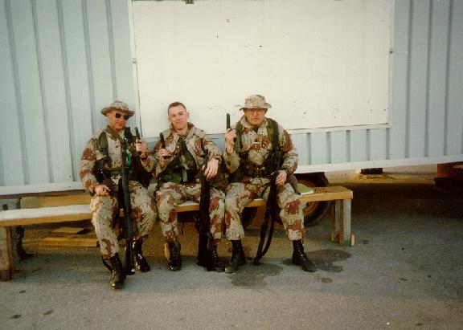
2/91 - At
the Port of Al-Jubail, waiting to be assigned the next mission. (Dawson, Me, Stinton)
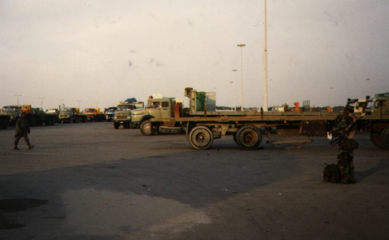
2/91 -
"Saudi Motors" was where we checked out our FINE motor
vehicles to cruise around in the desert.

2/91 - Port
of Al-Jubail. Many a night we were awaken by the Scud alarm to go
jump into the bunkers for a while.

2/91 -
Moving the 2nd Mar Div stuff where it needed to be along the
Baghdad Express.
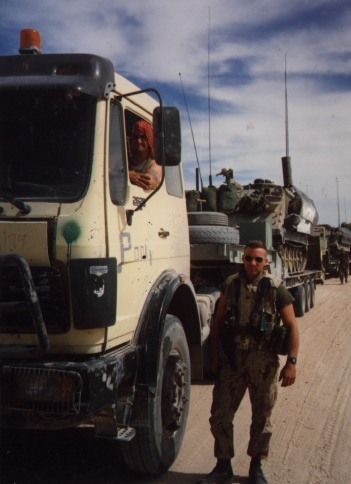
2/91 - A
couple of heatstroke jarheads enjoying their job too much! (Heath, Dawson)
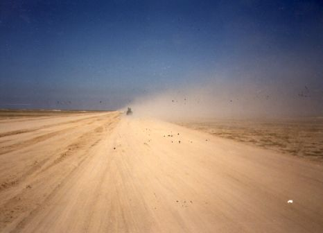
2/91 - A
Typical Dust Storm stirred up by truck convoys on the Kabrit
Road.
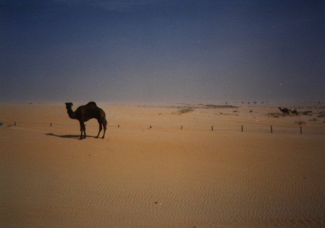
2/91 - A
loner camel by itself in the middle of nowhere.

2/91 -A
group of us taking a pit stop at a bunker observation post during
a supply run.(Stinton,
Olsen, Schulze, Staley, Dawson, Me)

2/91 - An
example of just how good we (the U.S.) were. If I remember right,
this was a full armored company or something like that.
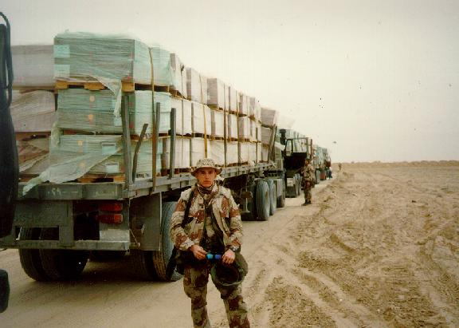
2/91 - A
quick break during a food supply run up North to the Kuwait
border.
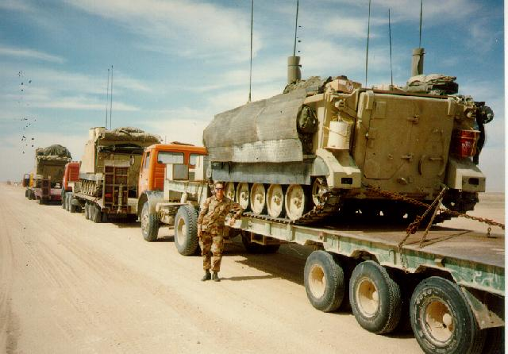
2/91 - On
the Kabrit Road moving the Tiger Brigade so they could flank to
the East. I'd like to say I drove the track, but I drove the
truck.

2/91 - A
slight sandstorm breeze made kind of a cool looking scene.
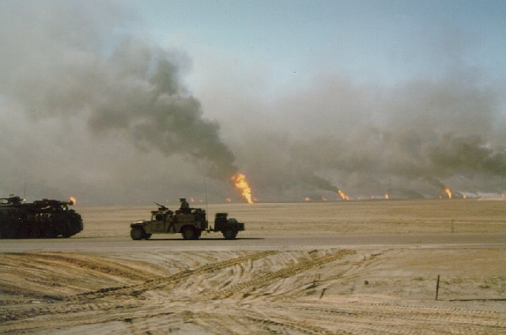
2/91 -
Typical scenery there.
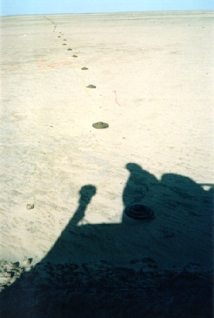
2/91 -
Watch your step! - Entering Kuwait.
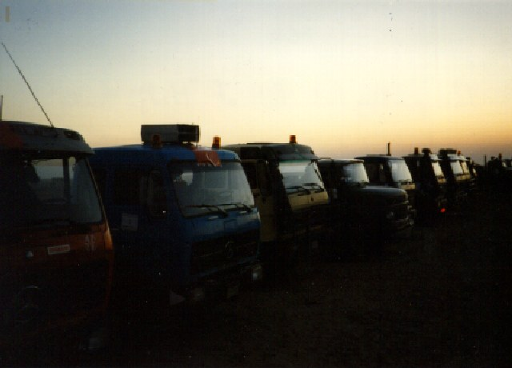
2/91 - A
Peaceful looking sunset as we settled into our "mobile
homes" at the end of a day. (before Saddam screwed up the
air)

2/91 - The
oil fires that SoDamn Insane is responsible for.

2/91 - We
handled and transported POW's by the hundreds and thousands as it
began to wind down.
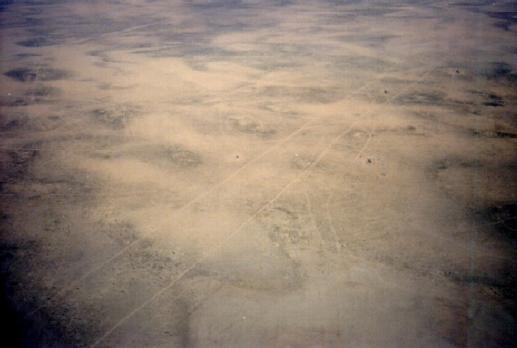
3/91 - The
highly evolved Persian Gulf highway system.
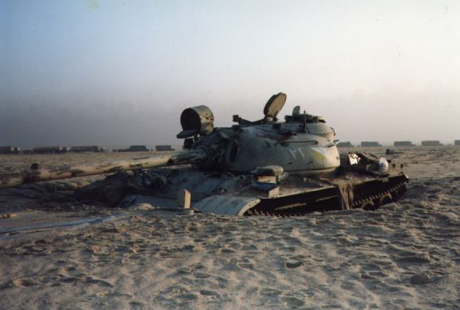
3/91 -
Oops. I guess the bunker wasn't quite enough for this Iraqi tank.
(Note the massive convoy in
the background - that's more of us hauling more "stuff".)
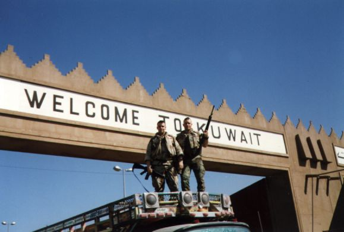
3/91 -
Entering Kuwait.(Gould,
Dube)
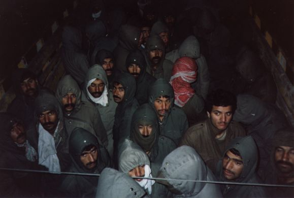
3/91 - Just
a few of the Iraqi EPW's that were recovered.
Unfortunately,
that's all for "During" Desert Storm. I had mailed home 2
full rolls (48 pictures) to be developed, but they never
made it home. Kind of still ticks me off to this day!
This next
group of 23 pictures takes place After the battles of Desert
Storm - as things relaxed a bit ...

3/91 - I
ran into Jess Valler, a friend from my small-town high school,
(1/2 way around the world) who I hadn't seen for about 5 years!
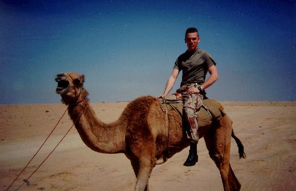
3/91 - Me,
a camel... need I say more? Got the photo op by giving some food
and water to a Bedouin passing by.
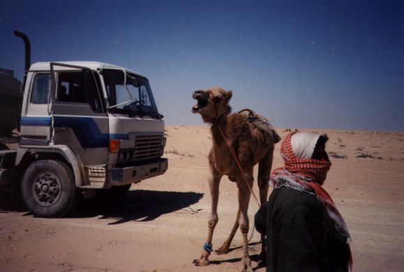
3/91 -
Here's the Bedouin and his mad camel.
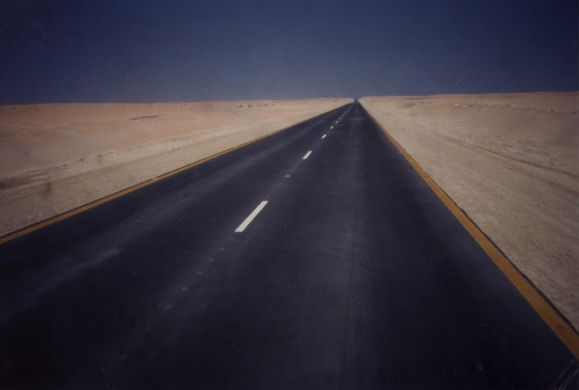
3/91 - Ever
feel like your just driving forever and not really getting
anywhere?
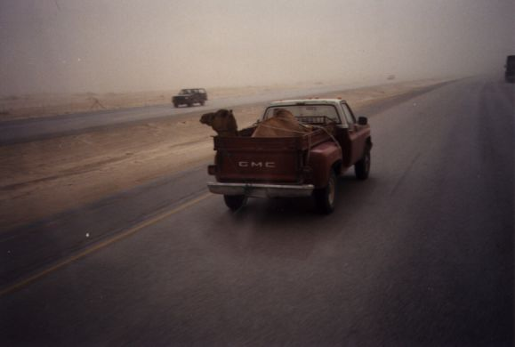
3/91 - I'm
not sure if this one is being bought or sold, but you just don't
see this very often anywhere else.
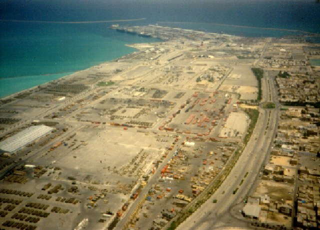
3/91 - An
aerial shot of the Port of Jubail as we flew over during a C-130
resupply mission. Camp Shepard is on the left and the city/town
of Al-Jubail is on the right.
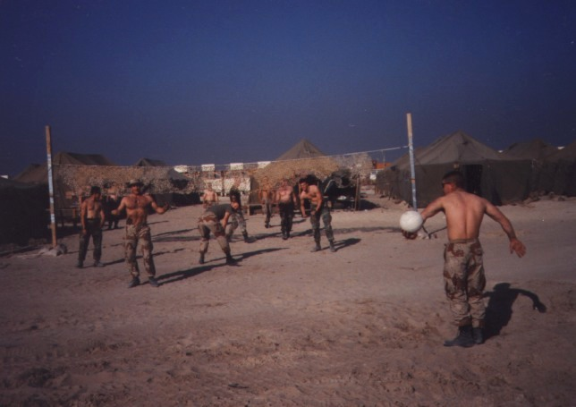
3/91 - The
heat, sunshine, and dry weather made the entire country one huge
volleyball court. (McCarthy,
Abraham, Schulze, Kenny)
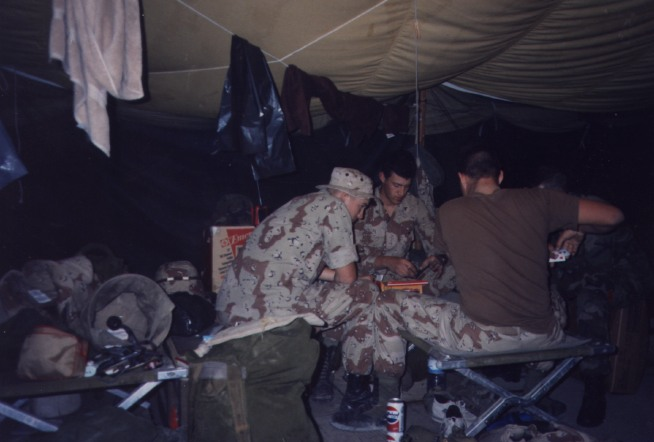
3/91 - So
much time to kill, so few card games to play. (Thomas, Feneis)
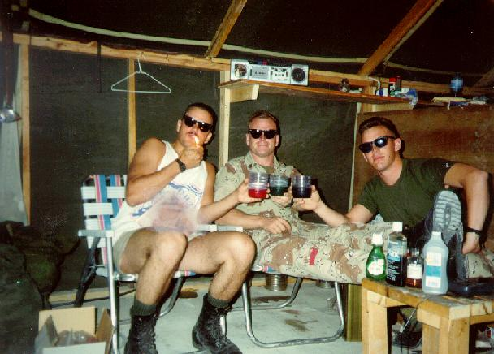
4/91 - King
Fahd International Airport. After being "dry" for a
while, it didn't take much for us to get pretty tanked up with
some "imported" and "disguised" beverages
(look closely on the table) that weren't supposed to be in that
country. (Hervey,
Crossland, Me)
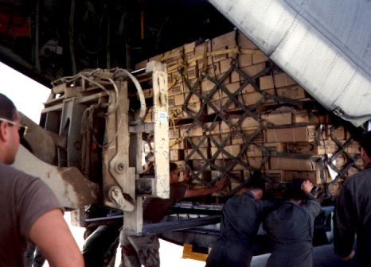
4/91 - #1
of 3: Loading the Air Force C-130 with supplies at King Abduhl
Aziz Airport (AKA "The Scud Bowl" stadium).
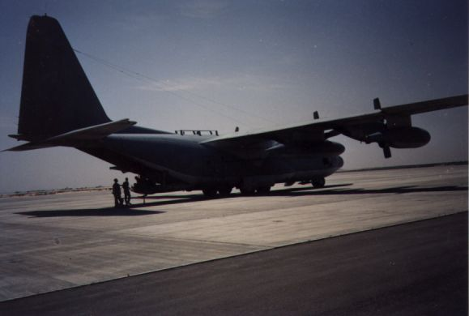
4/91 - #2
of 3: Unloading the Air Force C-130 with supplies "somewhere
up North" (you kind of got used to having no idea where you
were).
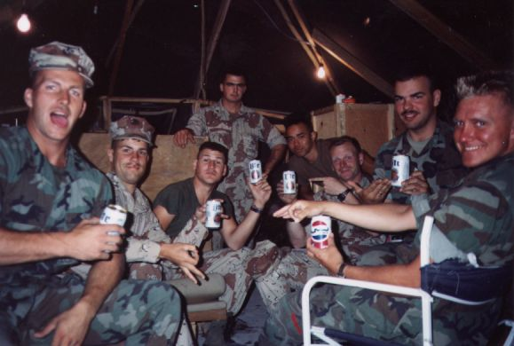
4/91 - #3
of 3: The Air Force treated us well. They sold me some, ...uh,
...well, "surplus" supplies that they just happened to
have in the plane at a very reasonable price and I treated my
Squad that day.(Abraham,
Boren, Shauger, Heath, McCarthy, Crossland, Hervey, Larson)
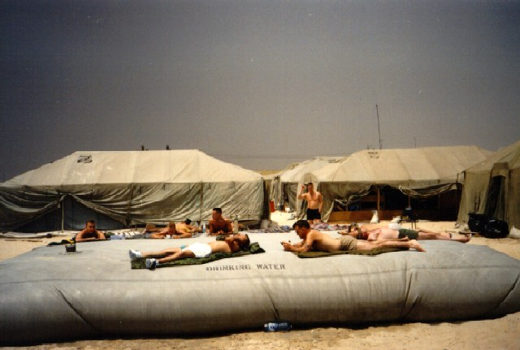
4/91 - As
we did 24 hr shift work at the Jubail Airport, the popular thing
to do during your down time was to catch some rays on the world's
largest waterbed - which kept surprisingly cool all the time.
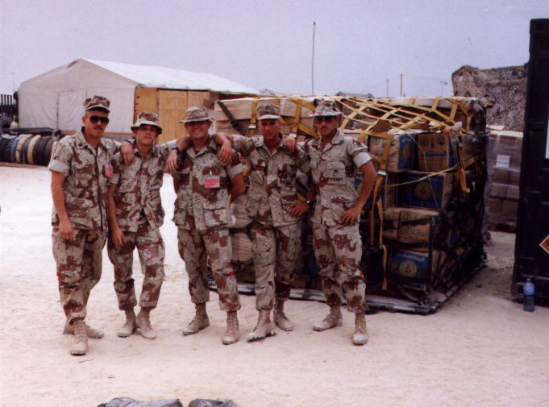
4/91 - Just
a group photo at the Jubail Airport. (Latendresse, Me, Stinton,
Dawson, Villa)
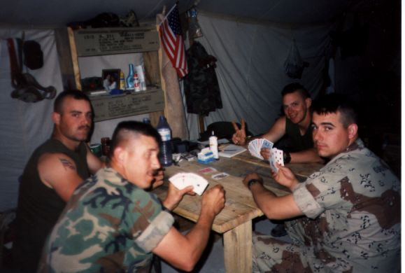
4/91 - A
lot of down time was spent playing nearly every variation of
every card game ever invented...(Dube, Latendresse, Betts, Gould)
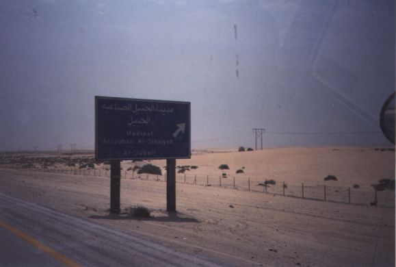
4/91 - An
example of a bilingual Saudi freeway sign.
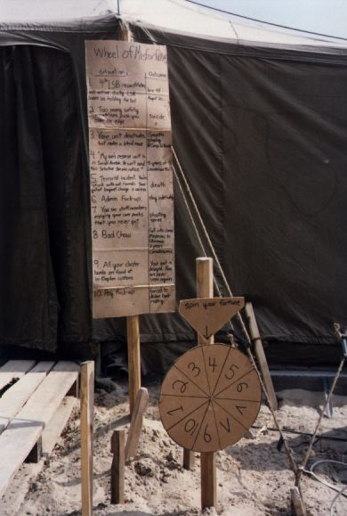
4/91 - The
"Wheel of Misfortune" was a classic example of the
"OK, we did our job, now get us the hell home" attitude
that settled in after a while.
(examples when you spin for a fortune: "Admin Screw-up: You
are stuck in-country indefinitely" or "Bad Chow: You
end up living through the war, but dying of food poisoning in the
chow hall" or even "An overload of too many stupid
safety rules pushes you over the edge to suicide")
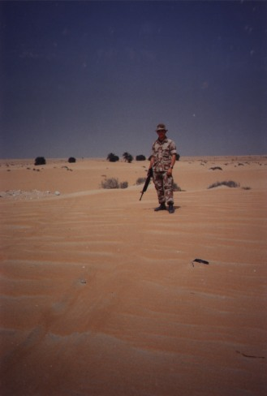
4/91 - A
shot of me standing at the end of the world.

5/91 - A
full group photo of Alpha Company 4th L.S.B., Seattle.
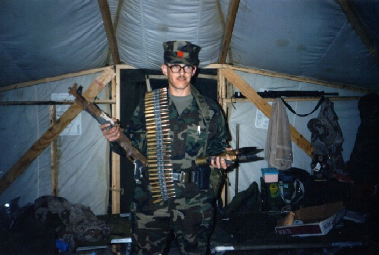
5/91 - As
we prepared to head home, "Gunny Rambo" came around
collecting all the crap everyone was going to try to sneak home. (Latendresse)
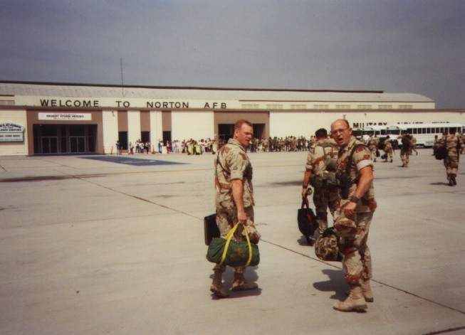
5/91 - One
of the first moments back in the good ol' U S of A!!!! (Crossland, Stinton)

5/91 - Back
stateside in California on weekend leave(Gunny Dosier from Kentucky,
Stinton, Latendresse, Skommesa, Me)
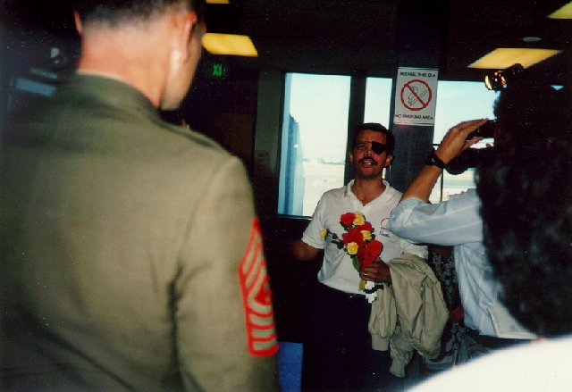
8/2/91 -
Marines always take care of their own - "A" Company and
some media welcome S/Sgt Jackson coming home at Sea-Tac Airport
after some recovery from his injuries.
Want a photo on this page? Just ask and I'll e-mail you a better resolution than you can download here.
Main Desert Storm Page / Gulf
War Links
/ 1996 Reunion Page
|
|
This
page designed, owned, operated, conceived, produced, imagined,
edited, constructed, re-constructed, adapted, redesigned, and
maintained by Kurt Lange.  (<--
This is the anti-spam version for my email address.)
This site
Copyright (c) 1997-2004 Kurt Lange. I'd be glad to pass out
copies of the photos, but just ask. (I could probably even zap
you better resolution copies than what you'd download here.)
(<--
This is the anti-spam version for my email address.)
This site
Copyright (c) 1997-2004 Kurt Lange. I'd be glad to pass out
copies of the photos, but just ask. (I could probably even zap
you better resolution copies than what you'd download here.)
Number
of Hits to this website:
|